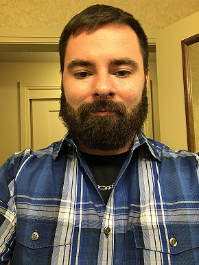

Welcome to my E-Portfolio!
About Me
Here's some basic information about me.

My name is Matthew Maxwell and this is my E-Portfolio. My first degree is a B.A. Communication and Rhetoric from University of Colorado Denver.
I knew I always wanted to go back to school or learn more about computer science because it's always been a favorite area of mine because of
how wide spread computers are but first, I was an introvert with anxiety problems, the Communication degree has helped a great deal with that
and I think it's made me more rounded person for it. If I'm not doing programming I'm more than likely reading (SciFi rocks!) or playing a video game.
I am currently working on my second Bachelors, this time in Computer Science, specifically programming. I'll talk more about that further down the page.
My current goals are to graduate with an Associate of Comp. Sci. before moving on to a B.S. Comp. Sci with a focus on programming. Ideally, I want to end up somewhere
like Microsoft or brave my way into game development because that is an area I find fascinating and something that I think would be fun and provide a lot of experience because
of all of the moving parts that are involved. But for the most part I am happy to learn whatever language fits the project best.
Programming
Here are the languages that I know and am comfortable with.
Most of the time I will be tinkering around in my spare time trying to do something fun.
I want to branch out in more depth into Python, C#, and SQL. As well as more mobile development in Java or Kotlin for Android.
HTML
While I am not exactly a web person, I know enough to build a functioning website and will be taking server side scripting. Below is some examples
of stuff I have worked on as well as this webpage that you're on right now.
As with the other pages more will be added over time.
Education
Here are the classes that I've taken, barring the general education requirements of Math, Science, History, and English.
Education
| University of Colorado Denver |
Broward College |
| Communication and Diversity |
Intro to CS |
| Technical Writing |
Programming 1 |
| Fundamentls of Communication |
Programming 2 |
| Communication, Citizenship, and Social Justice |
Web Authoring |
| Health Communication |
C# |
| Intro to Media Studies |
Project Management |
| Business-Professional Speaking |
Internship |
| Family Communication |
Oracle SQL |
| Rhetoric of Medicine & Health |
JavaScript |
| Organizational Communication |
Python |
| Intercultural Communication |
PHP |
| Environmental Communication |
| Communication and Sexuality |
| Mediation |
| Food as Communication |
| Political Communication |
Along with the aforementioned classes, I have a few certificates.
- Mediation Certificate
- CIW Internet Business Associate
- CIW JavaScript Specialist
- CompTIA Project+
Other Awards
- BC Hackathon 2018 Code For a Cause Winner - Face Detect
Contact Me
For the best way to reach me, please contact me via email which is listed below or you can reach out to me on
github.com/mrmaxwell78.